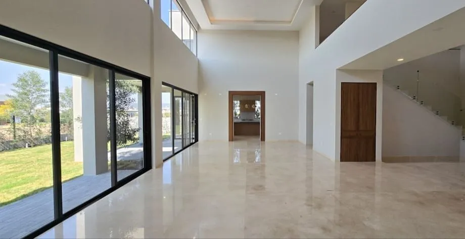
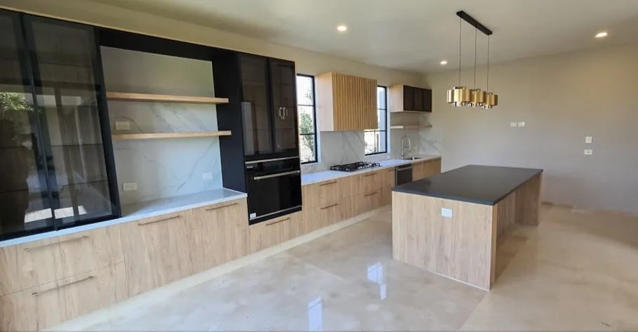
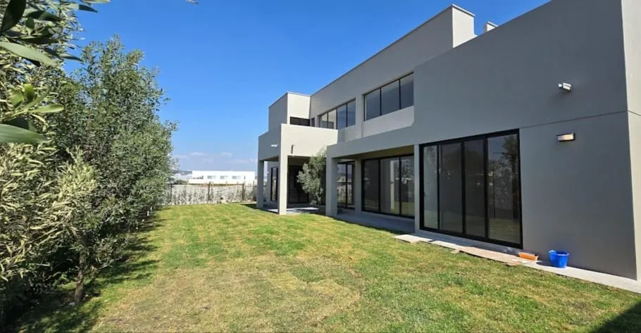
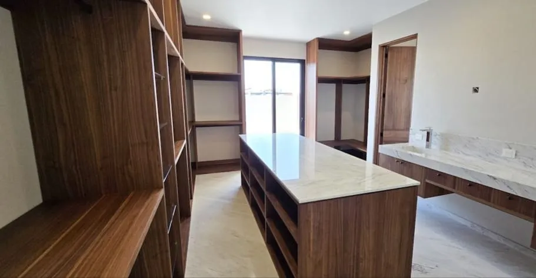
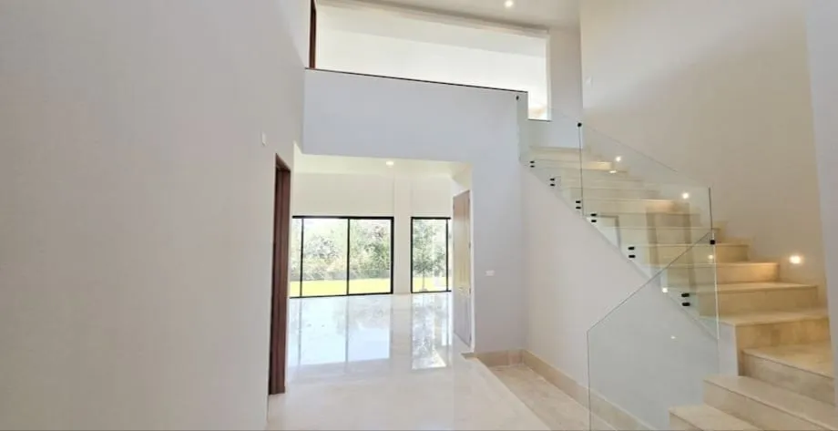

El terreno cambia la experiencia
Los 842.25 m² de terreno dan una escala distinta al jardín y a la relación entre interior y exterior. Conviene recorrerlo para valorar qué tanto aprovecharías esa amplitud.
Casa · El Campanario
$32,400,000 MXN
Precio actualizado · sujeto a disponibilidad y condiciones de la unidad.





Desliza para explorar las imágenes →
MÁS ALLÁ DE LOS METROS CUADRADOS
Puede encajar contigo si… Priorizas amplitud de terreno, espacios sociales y ambientes separados para trabajar o recibir.
Los 842.25 m² de terreno dan una escala distinta al jardín y a la relación entre interior y exterior. Conviene recorrerlo para valorar qué tanto aprovecharías esa amplitud.
Doble altura, cocina con desayunador, estudio y cuarto de juegos permiten actividades diferentes dentro de la misma casa.
La habitación de visitas en planta baja aporta flexibilidad. Las otras tres recámaras se ubican en planta alta, separadas de las áreas de convivencia.
Distingue los 572.86 m² techados de las superficies descubiertas y revisa costos de mantenimiento, estado de entrega y equipamiento incluido.
UBICACIÓN Y ENTORNO
Búsqueda por nombre del desarrollo; confirma el acceso conmigo antes de tu visita.
Doble altura, jardín amplio y cocina con desayunador. Consulta el precio y las condiciones actuales de esta residencia.